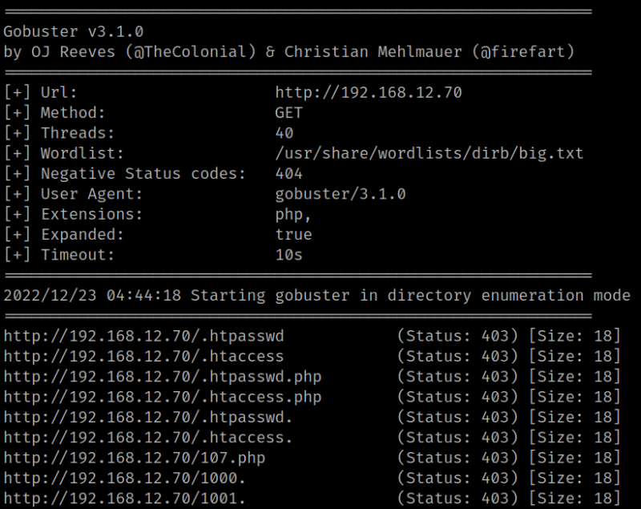
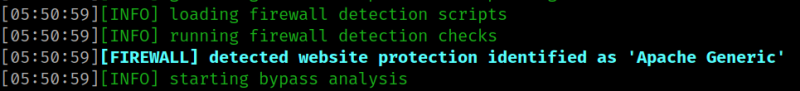
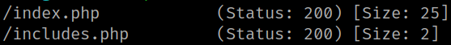

3.1 Gobuster
1. Run “gobuster” to enumerate the victim's machine.
$ gobuster dir -e -w /usr/share/wordlists/dirb/big.txt -x php, jpg -t 40 -u http://192.168.12.70 | tee gobuster_discover.log
Output:

You can see all the responses returns a 403 code. Maybe there's a WAF.
The easiest way of knowing whether there is a WAF or not is with the tool “whatwaf”. To install it and more info you can visit https://github.com/ekultek/whatwaf.
2. Run “whatwaf”.
$ ./whatwaf -u http://192.168.12.70
Output:

The firewall is “Apache”.
The web server has a WAF that responses a 403 error if maximum of "not found requests" per minute is overpassed.
HTTP 403 is an HTTP status code meaning access to the requested resource is forbidden. The server understood the request, but will not fulfill it.
3. Run “gobuster” again but this time slower with the parameters --delay s1 and -t 1. (Have a coffee or more)
$ gobuster -q dir -w /usr/share/wordlists/dirbuster/directory-list-2.3-medium.txt -x php -u http://192.168.12.70 --delay 1s -t 1
Output:

Now there isn't 403 responses and you have discovered an “includes.php” file.